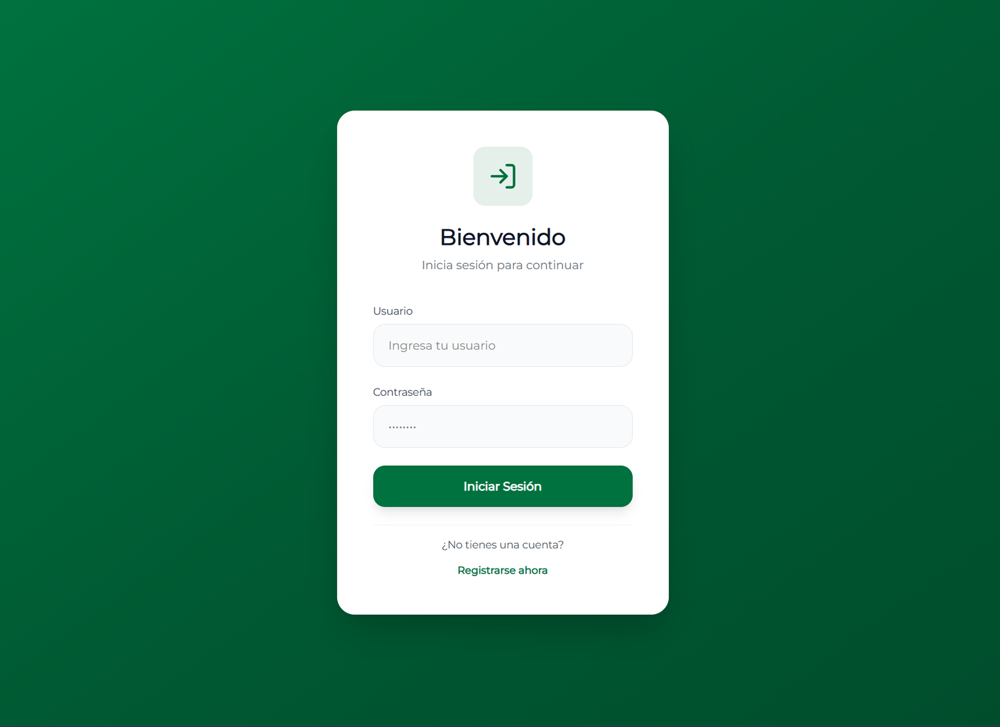
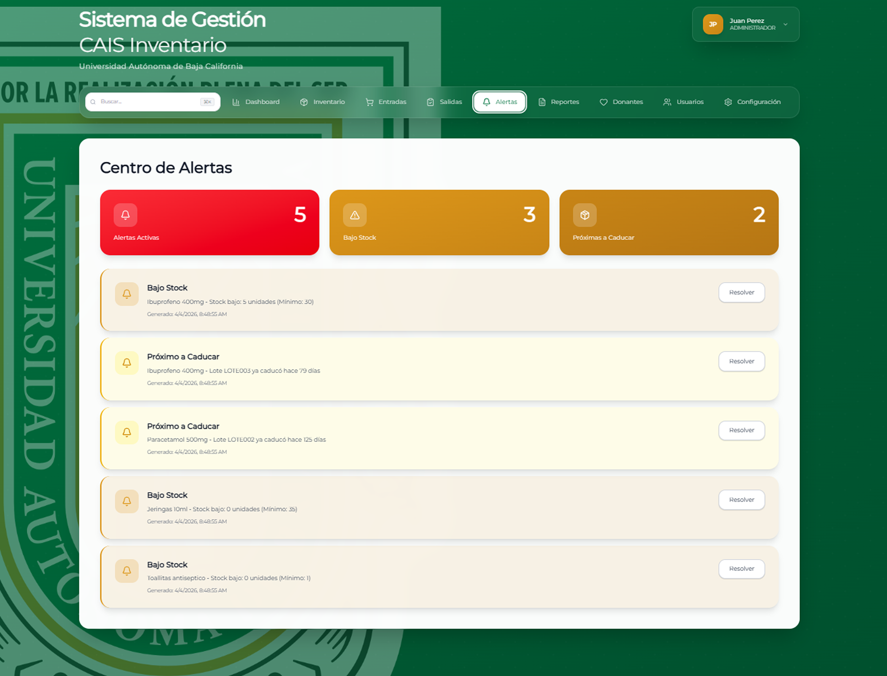
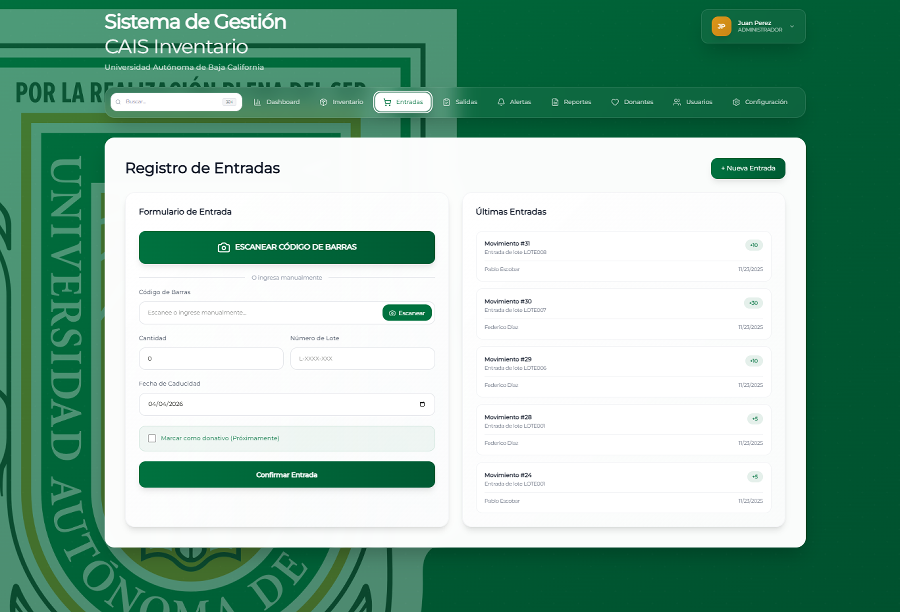
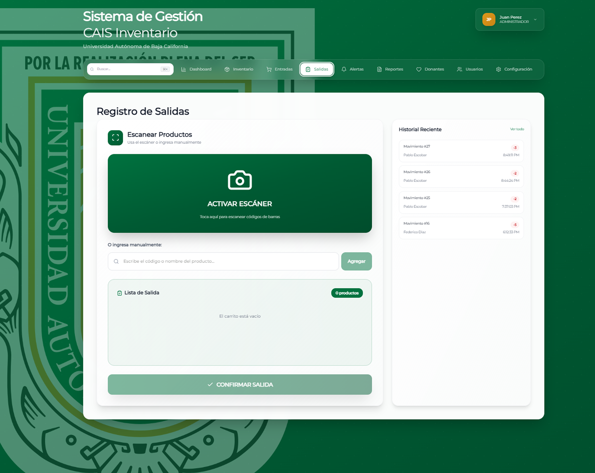
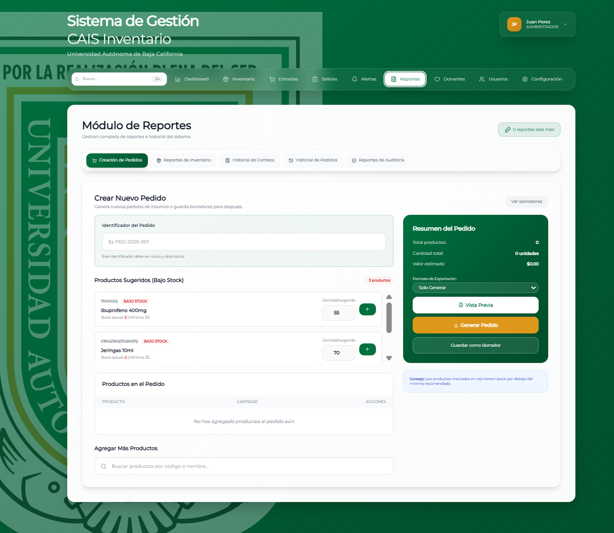

Proyecto / 02
CAIS Inventario
Inventario claro para una operación que no puede detenerse
Sistema web de gestión de insumos para el Centro de Atención Integral de Salud de la UABC. Reúne inventario, entradas, salidas, alertas y reportes en flujos por rol.

01 / Propósito
Una idea llevada a la práctica.
Proyecto para CAIS UABC. Presentación de un trabajo de equipo; el repositorio con código e historial permanece privado.
Esta ficha presenta el alcance documentado y material visual seleccionado. El código de desarrollo y los datos privados permanecen fuera de esta vitrina.
02 / Lo que hace
Funciones principales
- Paneles diferenciados para administración, inventario y personal consumidor.
- Registro de entradas y salidas con apoyo de códigos de barras.
- Alertas de existencias y caducidad, conteo físico y reportes.
03 / Vista del proyecto
Así toma forma.
Pantallas del entregable y maquetas de 2025–2026. Los nombres y registros visibles en las maquetas son datos de ejemplo.




04 / Explorar